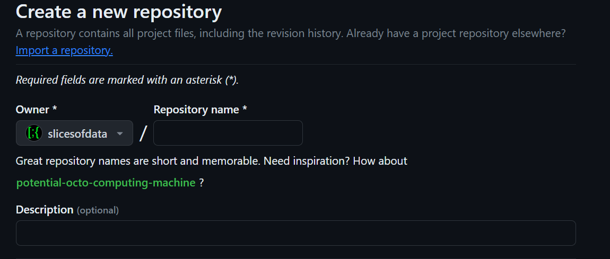
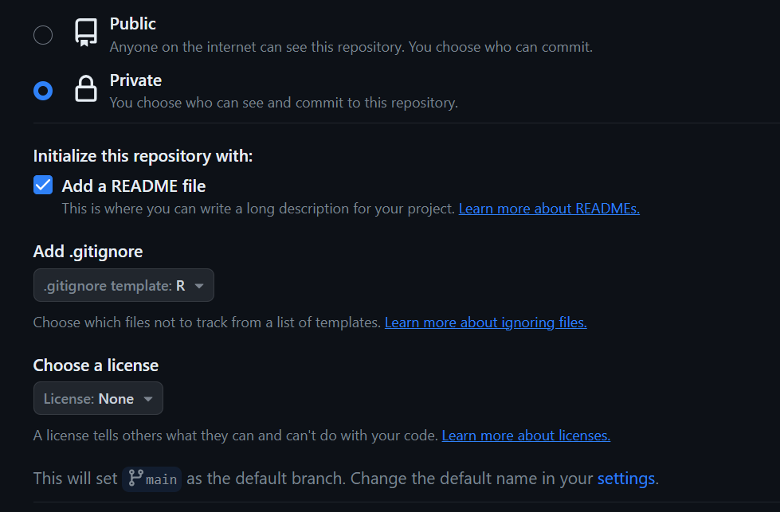

Project Management 01: Setting Up Git and GitHub for R
Overview
We will perform all the necessary tasks for using Git with RStudio and managing files at the remote repository at GitHub.
To Do: Steps of the Task
- Create a GitHub account
- Create GitHub repository named
"dataviz-exercises"from a template repository - Check that Git is setup in RStudio
- Configure Git for R, within R/RStudio (a familiar context)
- Create a Personal Access Token (PAT)
- Set your Git Credentials (using your PAT)
Warning: Do not try to create an RStudio version control project from a repo before completing these steps.
Follow steps below to complete.
Libraries Used
- {usethis}: 2.2.3: for project workflow automation
- {gitcreds}: 0.1.2: for querying git credentials
Creating a GitHub Account
Go to GitHub and create a free GitHub account. Make note of your username and your associated e-mail as you will need those for configuring Git with R.
- Consider this brief 15-minute TryGit Tutorial.
Stay logged in so that you can complete a later step.
Send your PM your GitHub username once you are assigned to a team project. Your PM will send those to me and I will add you as a collaborator to a private repo.
Checking Git Setup in RStudio
You will need to tell RStudio where to find the Git program as this may not be recognize automatically.
Find the path to the Git program executable that was installed in an earlier step.
- In the Terminal within
RStudio(not theRconsole), type:where giton Windows andwhich giton Mac/Linux to find the path to the program. If there are more than one paths listed, just make note of one of them. - If for some reason you don’t see a path listed using that approach, type:
Sys.which("git")in yourRconsole. The path here will likely be truncated so you will have to try to fill in the gaps when performing the step to set the path. See me for help.
- In the Terminal within
In RStudio, go to Tools > Global Options and click on left side bar menu item Git/SVN.
Select the option at the top to Enable version control interface for RStudio projects if it is not selected.
Set the path to the Git executable if it is not already there. Browse to the path to where Git.exe installed on your computer. Windows Users should make note that this path should be a path containing
Git.exeand not a path containinggit-bash.exe.Click Apply and then click OK.
Creating a Repository on GitHub Using a Template
You will need to create a personal repository for class exercises. You can create it by building the directory structure for it yourself. This, however, may lead to errors. Creating a project from a template will ensure all students have they same repository with the same directory structure.
Once logged into your GitHub account, go to this template repository.
On the top right, you will see an option to create a Use this template. Click it an select “Create a new repository”.
Name the repository dataviz-exercises and provide a description like “for data viz class exercises and homework”.
- Select the option to make the repository Private, check to add a README file, and add a .gitignore file by scrolling to find
R:

Click Create Repository
Watch the course video if you have not already so that you know how to unpack the files for the repository as well as checking that Git is configured for RStudio.
Note: Git manages files only, not directories. Directories will not populate in a repository unless they contain files. You will not see empty directories. For this reason, you may see empty files in the directory structure.
Configuring Git and GitHub for RStudio
There are two ways you can set up, either using R (console) or the command line (terminal). My recommendation is to use R because that is where you are likely most familiar, if even a small degree. We will use functions from the {usethis} library to help you. This library should be installed already as part of the class setup. If you get an error stating that the library is not installed when executing the steps below, just type install.packages("usethis", dep = TRUE) at your R console.
The {usethis} library will make connecting your R project to your github account simple. You will use usethis::use_git_config() to configure your GitHub account with Git on your computer; if you did not create, see earlier step. In the below example, you will see that we need to provide two character strings as arguments to the function. The strings are used to set your user.name and your user.email (the e-mail attached to your GitHub account). Double check your GitHub e-mail and username. Make sure that the username and e-mail are correct. You may need to check your e-mail in GitHub’s e-mail account settings.
Edit the following code to include your username and email and then execute your modified R code:
usethis::use_git_config(user.name = "github_username",
user.email = "github_email@gitrdone.com"
)Done!
Note:: This function does not return anything so if you are waiting for some exciting feedback, you will not see any.
Creating a Personal Access Token (PAT) for GitHub
Before completing this step, log into your GitHub account to facilitate the communication between RStudio and GitHub.
You will need a personal access token (PAT) for making remote changes to GitHub. A first step then is to create a PAT using usethis::create_github_token(). Second, you will register your PAT with the Git credential manager used by your computers operating system using gitcreds::gitcreds_set(). Keep in mind that if you use a different computer (e.g., you get a new one), you’ll need to register the PAT on that computer following the same steps described here.
To create your personal access token (PAT), type the following at your R console:
usethis::create_github_token()After executing the code, you will be taken to your GitHub account (if you remained logged in). Go to the bottom of the page and click generate token. You should add a description for it so that you can understand its use case. For example, describe it based the computer you are using it on, “my computer make and model”. You may also describe it based on a project you are working on, “token-for-project-xyz”. If you do not add a description, you will likely become overwhelmed and/or confused when you have multiple tokens. When you need to regenerate or delete a token that expires, you will not be able to determine what they are for if you do not add a description.
After creating your token, Copy it to your computer’s clipboard and save it someplace safe. Do not share your token with anyone because anyone who has it can access your public or private GitHub repositories.
Warning: Your PAT will expire after some duration, usually 30 days unless you change it. For this project, I suggest you change the expiration to a date after the semester ends to ensure you don’t have to go through this process again during the semester. Getting a new PAT is not difficult, however. If your PAT will soon expire, GitHub will send you an e-mail alerting you also. You can regenerate a PAT from a link in your e-mail, so make sure your associated e-mail is one you check.
Setting your Git Credentials (using PAT)
Now that you have a PAT, we now need to set those credentials for RStudio to communicate with your GitHub account.
Execute the following R code to set your credentials:
gitcreds::gitcreds_set()You may see a set of number options with corresponding descriptions. If you see them, enter the number corresponding to the option that makes the most sense for what you are trying to accomplish, for example, something like “set or replace your credentials”.
When should then see a prompt like ? Enter new password or token. At this point, paste your PAT here and press return/enter. Then remove the PAT from your clipboard so that you don’t paste them someplace.
You can check that your credentials are stored by typing the following R code in the console:
gh::gh_whoami()Updating your Personal Access Token (PAT)
At some point, even if you set your PAT to expire after the semester, it will expire and you will need to update it. When it’s about to expire (you will receive an e-mail), or if it has expired, you can repeat the steps to obtain a new toke and set your credentials in R as you did above using:
usethis::create_github_token()
gitcreds::gitcreds_set()Alternatively, you can go to https://github.com/settings/tokens while logged into your GitHub account and regenerate the token and change the expiration date. Then, copy the PAT to the clipboard and set your credentials again using:
gitcreds::gitcreds_set()Summary
You have now created your GitHub account, installed and/or set up Git with RStudio and ensured Git is installed, created a repository (from a template), created a new PAT, and set you credentials. The next step will be to connect the remote GitHub repository with your RStudio setup by creating a Git Version Control RStudio project.
Optional Resources
If you find yourself working on complicated projects, you might benefit from using a Git client or need to troubleshoot events. Although you won’t need to do this for this course, I’m providing some resources for your future. Feel free to come back to this course site to review content as I don’t intend to remove anything.
Git Client: Git clients work like the RStudio Gui option described above but likely much better. If you find the Terminal command line daunting or limiting, I might recommend a Git Client to use as I am not a big fan of the RStudio interface.
GitKraken is a good option and they have lots of tutorials on their website. GitKraken is seamless to set up. Install, connect your GitHub account, select your repo to add, and voilà. You can stage, commit, and push from there.
GitHub Desktop is another common option. Install, connect your GitHub account and select your repo to add, and voilà. You can stage, commit, and push from there.
Troubleshooting: happygitwithr is a resource for troubleshooting Git issues specifically with R.
Session Information
sessionInfo()R version 4.4.1 (2024-06-14 ucrt)
Platform: x86_64-w64-mingw32/x64
Running under: Windows 11 x64 (build 22631)
Matrix products: default
locale:
[1] LC_COLLATE=English_United States.utf8
[2] LC_CTYPE=English_United States.utf8
[3] LC_MONETARY=English_United States.utf8
[4] LC_NUMERIC=C
[5] LC_TIME=English_United States.utf8
time zone: America/Los_Angeles
tzcode source: internal
attached base packages:
[1] stats graphics grDevices utils datasets methods base
other attached packages:
[1] htmltools_0.5.8.1 DT_0.33 vroom_1.6.5 lubridate_1.9.3
[5] forcats_1.0.0 stringr_1.5.1 dplyr_1.1.4 purrr_1.0.2
[9] readr_2.1.5 tidyr_1.3.1 tibble_3.2.1 ggplot2_3.5.1
[13] tidyverse_2.0.0
loaded via a namespace (and not attached):
[1] utf8_1.2.4 generics_0.1.3 stringi_1.8.4 hms_1.1.3
[5] digest_0.6.36 magrittr_2.0.3 evaluate_0.24.0 grid_4.4.1
[9] timechange_0.3.0 fastmap_1.2.0 R.oo_1.26.0 rprojroot_2.0.4
[13] jsonlite_1.8.8 R.utils_2.12.3 fansi_1.0.6 scales_1.3.0
[17] cli_3.6.3 rlang_1.1.4 crayon_1.5.3 R.methodsS3_1.8.2
[21] bit64_4.0.5 munsell_0.5.1 withr_3.0.1 yaml_2.3.10
[25] tools_4.4.1 tzdb_0.4.0 colorspace_2.1-0 here_1.0.1
[29] vctrs_0.6.5 R6_2.5.1 png_0.1-8 lifecycle_1.0.4
[33] htmlwidgets_1.6.4 bit_4.0.5 pkgconfig_2.0.3 pillar_1.9.0
[37] gtable_0.3.5 glue_1.7.0 xfun_0.45 tidyselect_1.2.1
[41] rstudioapi_0.16.0 knitr_1.47 rmarkdown_2.27 compiler_4.4.1